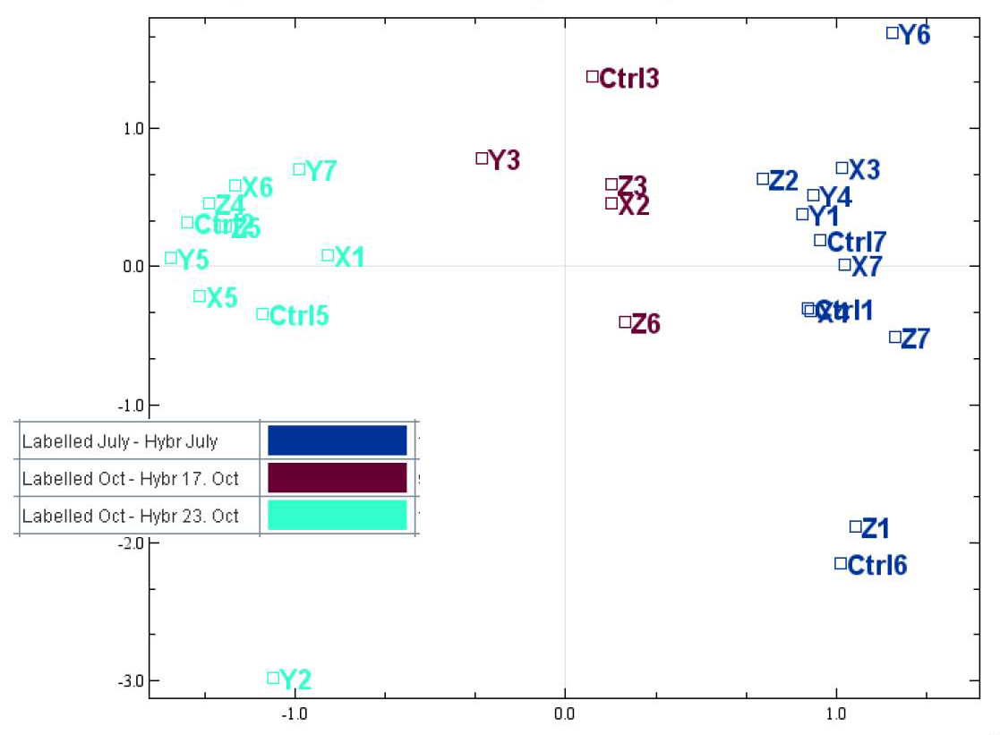
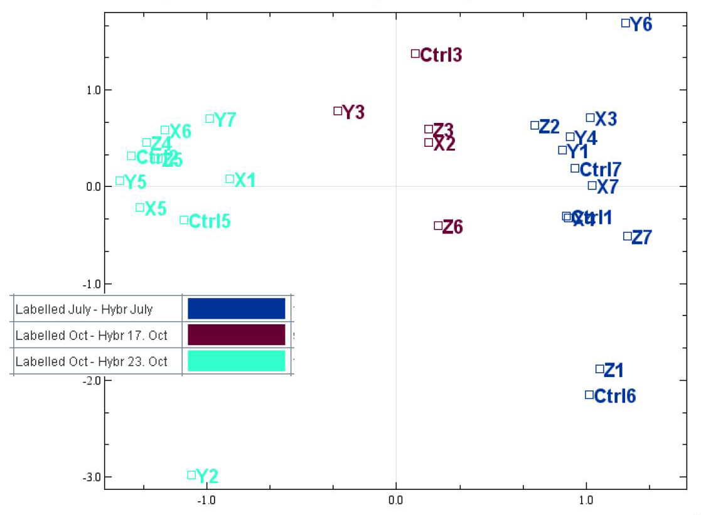

Day 2 - Module 09: Sample Visualizations for Quality Control
UM Bioinformatics Core
2021-08-08
Objectives:
- Generate common QC visualizations
- Understand how to interpret QC visualizations
- Understand when to revise the model used in the DESeq2 initialization
- Understand the pitfalls of post-hoc analysis
- Describe the causes and implications of batch effect or other QC issues in an RNA-Seq experiment
1 Differential Expression Workflow
Prior to testing for differential expression between our comparisons of interest, we’ll first generate plots that will assess how well our samples match up with our expectations (based on their treatment groups) and what we might expect to see from our differential expression comparisons.
| Step | Task |
|---|---|
| 1 | Experimental Design |
| 2 | Biological Samples / Library Preparation |
| 3 | Sequence Reads |
| 4 | Assess Quality of Raw Reads |
| 5 | Splice-aware Mapping to Genome |
| 6 | Count Reads Associated with Genes |
| — | — |
| 7 | Organize project files locally |
| 8 | Initialize DESeq2 and fit DESeq2 model |
| 9 | Assess expression variance within treatment groups |
| 10 | Specify pairwise comparisons and test for differential expression |
| 11 | Generate summary figures for comparisons |
| 12 | Annotate differential expression result tables |
2 Sample Visualizatons for Quality Control
Yesterday we discussed aspects of quality control assessment at the sequencing data level. Today we will outline sample-level and gene level quality control to determine what we should expect from our downstream differential expression comparisons.
To do this, we will assess the similarity of our samples by using principal component analysis (PCA). This will allow us to determine how well patterns in the data fits our expectations from the experiments design and possible sources of variation in the dataset.
Other common visualizations that we generate for our analyses include expression heatmaps, sample correlation heatmaps, and boxplots of raw and/or normalized counts.
TODO: Link to bonus content which includes code for additional visualizations
2.1 Principle Component Analysis (PCA) Plots
A common and very useful plot for evaluating how well our samples cluster by treatment groups are Principle Component Analysis (PCA) plots. PCA is used to emphasize variation and bring out patterns in large datasets by using dimensionality redution.
This image from a helpful step by step explaination of PCA helps to illustrate the principle component projections for two genes measured in approximately 60 mouse samples. Generally, this process is repeated and after each gene’s contribution to a principle component or weight is determined, the expression and weight are summed across genes for each sample to calculate a value for each principle component.

Note: A more detailed overview of the PCA procedure is outlined in a Harvard Chan Bioinformatic Core training module and is based a more thorough description presented in a StatQuest’s video. Additionally, this TowardsDataScience blog post goes through the math behind PCAs.
2.1.1 Interpreting PCA plots
TODO: Add image of PCA to walk through interpretation before going through code
In the plot we’ll generate below, we can see that principle component 1 (PC1) explains ~80% of the variance in our data while principle component 2 (PC2) explains ~12% of the variance. We also see that samples in both control groups are fairly tightly grouped, while samples within each Tx group do not cluster as tightly.
We generally expect most of the variance to be explained by the first two or three principle components.
This helpful overview of PCA basics walks through both the generation and interpretatation of similar plots.
2.1.2 Evaulating batch effects or confounders
PCA plots are useful for evaulating the impact of factors other than the experimental treatment or group.
At times, batch effects can be quite obvious, such as this example from the DESeq2 vignette, where there is clear separation within the treatment groups.
If we color only by sequencing run type (paired-end vs. single-end), we see that PC2 (29% of variance) is primarily explained by this technical covariate.
However, the samples are clearly seperated by experimental condition on PC1, and since PC1 explains more variance than PC2 and since we have non-confounded batches, we could incorporate the technical covariate into our model design, such as outlined in the DESeq2 vignette.
Click for complex design discussion
In experiments with more complex designs, such as when there are interesecting/multiple treatment conditions, it can be less clear what covariants are influencing expression, such as illustrated from this documenation for a microarray analysis tool. From the PCA labeled by experimental treatment, we see that samples from the treatment group do not cluster together and that there is high variance across all treatment groups. However, when the plot is color coded by the technical batches of probe labeling, we see that the patterns in the data are better explained by batch than the experimental conditions. 
However, when the plot is color coded by the technical batches of probe labeling, we see that the patterns in the data are better explained by batch than the experimental conditions. 
2.1.2.1 When to remove samples or update the design formula
Generally, the decision to remove samples should not be taken lightly, especially if the consideration is based on the expression level patterns we are visualizing in this section, as doing so without sufficient justification could potentially bias your results. Other training materials have a step-by-step example of evaluating batch effects using PCAs, that we would recommend reviewing prior to removing any samples from your comparisons.
If your PCA reveals patterns that were not accounted for in the initial model fit, the DESeq2 vignette provides an overview of how to add additional covariates to a model design before refitting the DESeq2 model for a dataset.
2.2 Plot Setup
We’ve already loaded the libraries we need for this module. We’ll follow best practices and create new directories to organize our output figures as well as a variable to store a descriptor of the dataset we are looking at.
plotPath = 'figures/'
dir.create(plotPath, showWarnings = FALSE)
Comparison <- "ko.Tx" # descriptor for the dataset we are looking at
# NOTE, is this correct? In the text below 'Gtype.Tx' is mentioned...2.3 PCA Plot initialization
Below, we will plot the rlog normalized data for our samples projected onto a 2D plane and spanned by their first two principle components to visualize the overall effect of experimental covariates and determine if there is evidence of batch effects.
We’ll generate the PCA projections for the top 500 using the plotPCA function from DESeq2, specifying Gtype.Tx as the condition of interest.
p.all <- plotPCA(rld, intgroup = c('Gtype.Tx'), ntop = 500)
p.allNext, we’ll save this plot to file.
pdf(file = paste0(plotPath, 'PCAplot_rlog_', Comparison, '.pdf'), onefile = TRUE)
p.all
dev.off()## quartz_off_screen
## 2Click for code to customize PCA plots
We can generate a customized plot using the ggplot2 package, including shape assignments for our treatment groups and color assignments for the individual samples.
pdf(file = paste0(plotPath, 'PCAplot_Fancy_rlog_', Comparison, '.pdf'), onefile = TRUE)
#PCA plot for Rlog-Normalized counts for all samples
CombinatoricGroup <- factor(MetaInfo$Gtype.Tx)
SampleName <- factor(row.names(MetaInfo))
#Generate the PCA projections using the `plotPCA` function from DESeq2.
p.all <- plotPCA(rld, intgroup = c('Gtype.Tx'), ntop = 500)
gp <- ggplot(p.all$data, aes(x = PC1, y = PC2, color = SampleName, shape = CombinatoricGroup)) +
scale_shape_manual(values=1:nlevels(CombinatoricGroup), name = 'Combinatoric Group') +
geom_point(size=2) +
ggtitle(label = as.character('All samples Rlog-Normalized')) +
guides(colour=guide_legend(nrow=12, title = 'Sample'),
legend.key = element_rect(size = 1),
legend.key.size = unit(0, 'cm')) +
xlab(p.all$labels[2]) + ylab(p.all$labels[1]) +
theme(legend.margin = margin(t = 0, unit='mm'), plot.title = element_text(hjust = 0.5)) +
theme_classic(base_size = 10)
plot(gp)
dev.off()## quartz_off_screen
## 2Click for example code for generating a ScreePlot
A screeplot is a way to visualize the variance explained by all principle components. To generate a scree plot, the PCA results need to be used independently of plotting, such as described by this statquest post and replicated below.
# generate PCA loadings
pca <- prcomp(t(assay(rld)), scale=TRUE)
## get the scree information
pca.var <- pca$sdev^2
scree <- pca.var/sum(pca.var)
barplot((scree[1:10]*100), main="Scree Plot", xlab="Principal Component", ylab="Percent Variation")
```
<img src="Module09_SampleQCViz_files/figure-html/ScreePlot-1.png" width="672" />
We can see that the majority (~65%) of the variance across our samples is explained by the first three principle components, giving us some additional confidence regarding the quality of our data.
In these scree plot examples from BioTuring, the plot on the left fits what we would expect for a dataset with high signal from the experimental treatment, where the majority of the variance is explained by the first few principle components. The plot on the right illustrates a scenario where the variance is distributed across many components, which could be due to low signal from the experimental treatment, complex experimental design, or confounding factors.
image: 
</details>
#### Optional PCA plot for raw data
<details>
<summary>*Click for code for PCA visualization of raw data*</summary>
It can sometimes be useful to also generate a PCA plot for the raw data as well as the normalized data.
```r
pdf(file = paste0(plotPath, 'PCAplot_raw_', Comparison, '.pdf'), onefile = TRUE)
#PCA for Raw counts for all samples
RC <- SummarizedExperiment(log2(counts(dds, normalized = FALSE)), colData=colData(dds))
p.RC <- plotPCA(DESeqTransform(RC), intgroup = 'Gtype.Tx')
gpRC <- ggplot(p.RC$data, aes(x = PC1, y = PC2, color = SampleName, shape = CombinatoricGroup)) + xlab(p.RC$labels[2]) + ylab(p.RC$labels[1]) + scale_shape_manual(values=1:nlevels(CombinatoricGroup), name = 'Combinatoric Group') + geom_point(size=2) + ggtitle(label = as.character('All samples Raw Data')) + theme(plot.title = element_text(hjust = 0.5)) + guides(colour=guide_legend(nrow=12, title = 'Sample'), legend.key = element_rect(size = 1), legend.key.size = unit(0, 'cm')) + theme_classic(base_size = 10) + theme(legend.margin=margin(t = 0, unit='mm'))
plot(gpRC)
dev.off()
```
```
## quartz_off_screen
## 2
```
```r
# embedd example of plot (rlog only)
plot(gpRC)
```
<img src="Module09_SampleQCViz_files/figure-html/PCAraw-1.png" width="672" />
We see that there is less variance explained by PC1 and that the samples from the same group are not as well clustered for the raw data. Since this is prior to normalization, these differences are likely due to **technical** considerations like sequencing depth differences that are accounted for by the rlog normalization.
</details>
**TODO: Add in summary from last workshop materials**
---
# Sources Used
* HBC QC tutorial: https://hbctraining.github.io/DGE_workshop/lessons/03_DGE_QC_analysis.html
* Detailed Heatmap tutorial from Galaxy: https://training.galaxyproject.org/training-material/topics/transcriptomics/tutorials/rna-seq-viz-with-heatmap2/tutorial.html
* PCA Overview: https://blog.bioturing.com/2018/06/14/principal-component-analysis-explained-simply/
---
# Session Info:
```r
sessionInfo()## R version 4.1.0 (2021-05-18)
## Platform: x86_64-apple-darwin17.0 (64-bit)
## Running under: macOS Big Sur 11.5.1
##
## Matrix products: default
## LAPACK: /Library/Frameworks/R.framework/Versions/4.1/Resources/lib/libRlapack.dylib
##
## locale:
## [1] en_US.UTF-8/en_US.UTF-8/en_US.UTF-8/C/en_US.UTF-8/en_US.UTF-8
##
## attached base packages:
## [1] parallel stats4 stats graphics grDevices utils datasets methods base
##
## other attached packages:
## [1] dplyr_1.0.6 data.table_1.14.0 RColorBrewer_1.1-2 pheatmap_1.0.12
## [5] ggrepel_0.9.1 tidyr_1.1.3 ggplot2_3.3.4 DESeq2_1.32.0
## [9] SummarizedExperiment_1.22.0 Biobase_2.30.0 MatrixGenerics_1.4.0 matrixStats_0.58.0
## [13] GenomicRanges_1.44.0 GenomeInfoDb_1.28.0 IRanges_2.26.0 S4Vectors_0.30.0
## [17] BiocGenerics_0.38.0 rmarkdown_2.8
##
## loaded via a namespace (and not attached):
## [1] sass_0.4.0 bit64_4.0.5 jsonlite_1.7.2 splines_4.1.0 bslib_0.2.5.1
## [6] assertthat_0.2.1 highr_0.9 blob_1.2.1 GenomeInfoDbData_1.2.6 yaml_2.2.1
## [11] pillar_1.6.1 RSQLite_2.2.7 lattice_0.20-44 glue_1.4.2 digest_0.6.27
## [16] XVector_0.32.0 colorspace_2.0-1 htmltools_0.5.1.1 Matrix_1.3-4 XML_3.99-0.6
## [21] pkgconfig_2.0.3 genefilter_1.74.0 zlibbioc_1.16.0 purrr_0.3.4 xtable_1.8-4
## [26] scales_1.1.1 BiocParallel_1.26.0 tibble_3.1.2 annotate_1.48.0 farver_2.1.0
## [31] generics_0.1.0 ellipsis_0.3.2 withr_2.4.2 cachem_1.0.5 survival_3.2-11
## [36] magrittr_2.0.1 crayon_1.4.1 memoise_2.0.0 evaluate_0.14 fansi_0.5.0
## [41] tools_4.1.0 lifecycle_1.0.0 stringr_1.4.0 locfit_1.5-9.4 munsell_0.5.0
## [46] DelayedArray_0.18.0 AnnotationDbi_1.32.3 compiler_4.1.0 jquerylib_0.1.4 rlang_0.4.11
## [51] grid_4.1.0 RCurl_1.98-1.3 labeling_0.4.2 bitops_1.0-7 gtable_0.3.0
## [56] DBI_1.1.1 R6_2.5.0 knitr_1.33 fastmap_1.1.0 bit_4.0.4
## [61] utf8_1.2.1 stringi_1.6.2 Rcpp_1.0.6 vctrs_0.3.8 geneplotter_1.70.0
## [66] tidyselect_1.1.1 xfun_0.23These materials have been adapted and extended from materials listed above. These are open access materials distributed under the terms of the Creative Commons Attribution license (CC BY 4.0), which permits unrestricted use, distribution, and reproduction in any medium, provided the original author and source are credited.